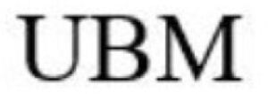

Trade Mark Journal No.2025/047 21 November 2025
WO0000001885339 (1,9,10)
Office of origin: Italy
Date of International Registration:12 May 2025
Date of designation in the UK:
12 May 2025

International priority date claimed: 26 November 2024
(Italy)
(302024000175860)
- Class 1
- Chemical products and substances for laboratory, analytical, diagnostic, clinical or medical use, in particular substances for the preparation of preservation and transport media for DNA, RNA and proteins for the analysis of viruses, bacteria and other microorganisms; chemical products, substances, and molecules, and their combinations, intended to facilitate the chemical, molecular and biochemical analysis of biological and chemical samples and substances collected in preservation and transport media.
- Class 9
- Disposable devices for the collection, preservation and transport of biological and chemical samples and substances, not for medical use; tubes containing preservation and transport media for viruses, bacteria and other microorganisms and their components, not for medical use; tubes containing lytic and inactivating media for viruses, bacteria and other microorganisms intended to preserve their components and macromolecules, not for medical use; tubes containing media for the preservation of components and macromolecules of viruses, bacteria and other microorganisms, not for medical use; flocked swabs for the collection, preservation and transport of viruses, bacteria and other microorganisms and their components, not for medical use; swabs for the collection, preservation and transport of viruses, bacteria and other microorganisms and their components, not for medical use; containers and kits for the transport and storage of biological, chemical and diagnostic samples, not for medical use; containers and kits for the lysis and inactivation of viruses, bacteria and other microorganisms and cells, not for medical use; containers and kits for the preservation of components and macromolecules of viruses, bacteria and other microorganisms, not for medical use; kits comprising flocked swabs and tubes containing preservation and transport media for viruses, bacteria and other microorganisms and their components, not for medical use; kits comprising swabs and tubes containing preservation and transport media for viruses, bacteria and other microorganisms and their components, not for medical use; kits comprising flocked swabs and tubes containing lytic and inactivating media for viruses, bacteria and other microorganisms intended to preserve their components and macromolecules, not for medical use; kits comprising swabs and tubes containing lytic and inactivating media for viruses, bacteria and other microorganisms intended to preserve their components and macromolecules, not for medical use; kits comprising flocked swabs and tubes containing media intended to preserve components and macromolecules of viruses, bacteria and other microorganisms, not for medical use; kits comprising swabs and tubes containing media intended to preserve components and macromolecules of viruses, bacteria and other microorganisms, not for medical use.
- Class 10
- Disposable devices for the collection, preservation and transport of biological and chemical samples and substances, for medical use; tubes containing preservation and transport media for viruses, bacteria and other microorganisms and their components, for medical use; tubes containing lytic and inactivating media for viruses, bacteria and other microorganisms intended to preserve their components and macromolecules, for medical use; tubes containing media for the preservation of components and macromolecules of viruses, bacteria and other microorganisms, for medical use; containers and kits for the transport and storage of biological, chemical and diagnostic samples, for medical use; containers and kits for the lysis and inactivation of viruses, bacteria and other microorganisms and cells, for medical use; containers and kits for the preservation of components and macromolecules of viruses, bacteria and other microorganisms, for medical use; kits comprising tubes containing preservation and transport media for viruses, bacteria and other microorganisms and their components, for medical use; kits comprising tubes containing preservation and transport media for viruses, bacteria and other microorganisms and their components, for medical use; kits comprising tubes containing lytic and inactivating media for viruses, bacteria and other microorganisms intended to preserve their components and macromolecules, for medical use; kits comprising tubes containing lytic and inactivating media for viruses, bacteria and other microorganisms intended to preserve their components and macromolecules, for medical use; kits comprising tubes containing media intended to preserve components and macromolecules of viruses, bacteria and other microorganisms, for medical use; kits comprising tubes containing media intended to preserve components and macromolecules of viruses, bacteria and other microorganisms, for medical use.
COPAN ITALIA S.p.A.
Representative: PGA S.P.A., Via Mascheroni, 31, I-20145 Milano (MI), ITALY